パターンの保存
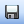をクリック。パターンを編集した場合、自動で保存されませんので、編集後は必ず保存してください。
テーブルの見方
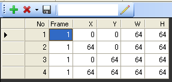
No 順にパターンを表示します。Frame はそのパターンを表示するフレーム数です。
キーフレームを追加
 をクリック。
をクリック。
キーフレームを削除
削除したいキーフレームを選択してをクリック。
キーフレームをすべて削除
下図の赤い部分をクリックし、「すべて削除」を選択。
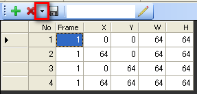
フィル機能
すべて同じ値で埋める
埋めたいセルを選択した状態で、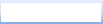 に値を入力して Enter キーを押します
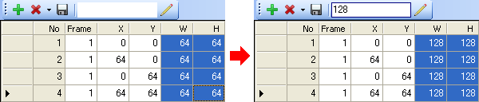
値を加算（減算）する
加算したいセルを選択した状態で、 に 数値+ または 数値- と入力して Enter キーを押します
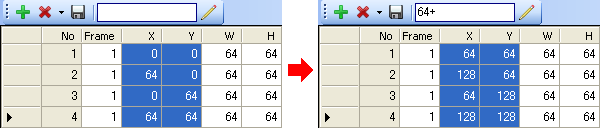
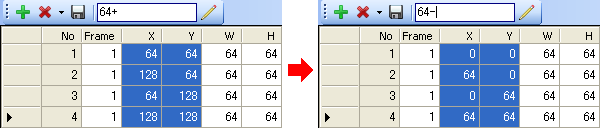
セルを埋めるごとに値を増やす
埋めたいセルを選択した状態で、 に 数値++ と入力して Enter キーを押します
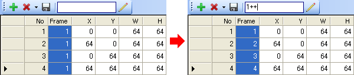
オートフィル機能
規則に沿ったパターンを一括作成する機能です。 をクリックします。
下図のダイアログが表示されます。
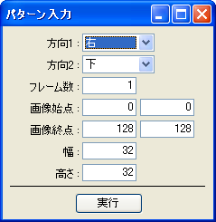
| 方向１ | 先に走査する方向 |
|---|---|
| 方向２ | 次に走査する方向 |
| フレーム数 | 表示するフレーム数 |
| 画像始点 | 画像の始点 |
| 画像終点 | 画像の終点 |
| 幅 | 幅 |
| 高さ | 高さ |
見本:
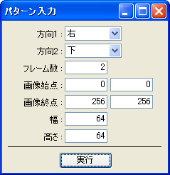
実行すると…
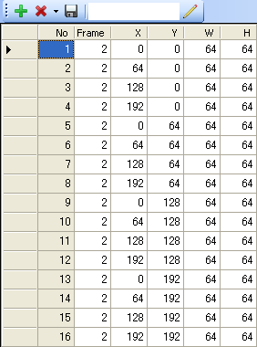
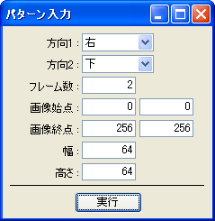
実行すると…
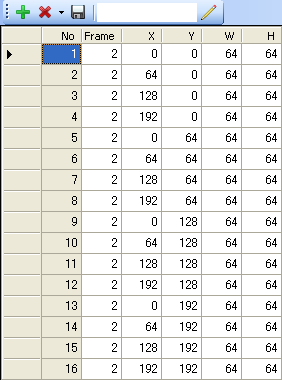